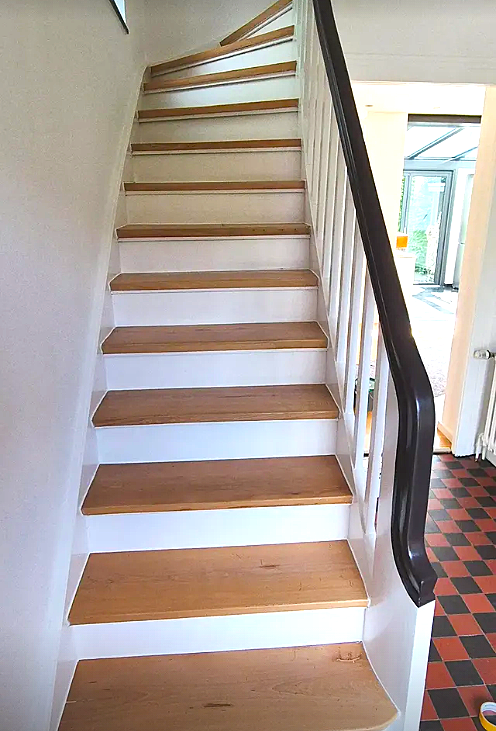
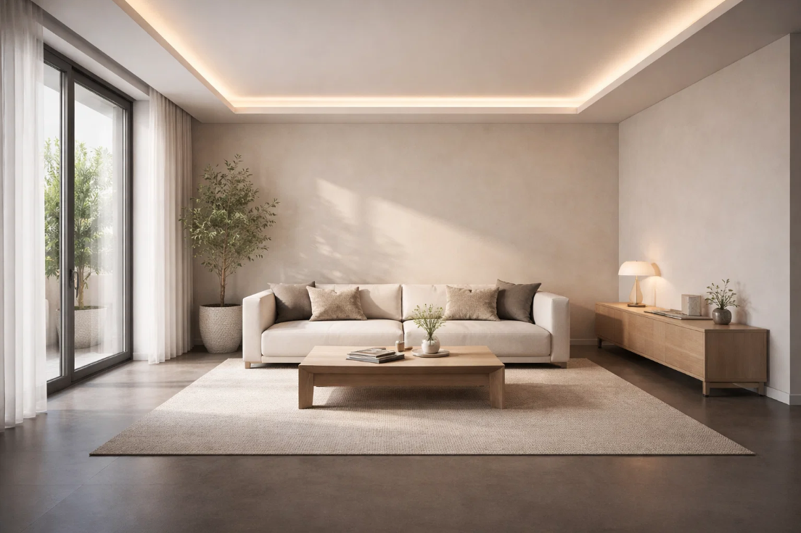

Typische Leistungen
- Innenanstriche mit abgestimmten Farbharmonien
- Tapezierarbeiten und dekorative Akzentflächen
- Treppenhäuser, Flure und stark genutzte Bereiche
- Saubere Ausführung mit Blick auf Übergänge und Details
Interior bei Wayand bedeutet mehr als nur neue Farbe. Räume werden so gestaltet, dass Licht, Oberfläche und Alltag zusammenpassen. Das Ergebnis wirkt hochwertig, wohnlich und dauerhaft stimmig.
Ob Wohnbereich, Treppenhaus oder Flur: Farben und Materialien werden so eingesetzt, dass sie nicht nur modern aussehen, sondern langfristig funktionieren.


Wayand begleitet die Auswahl von Farbton und Oberfläche so, dass Räume nicht beliebig wirken. Ziel ist ein Gesamtbild, das ruhig, hochwertig und passend zum Alltag der Bewohner entsteht.